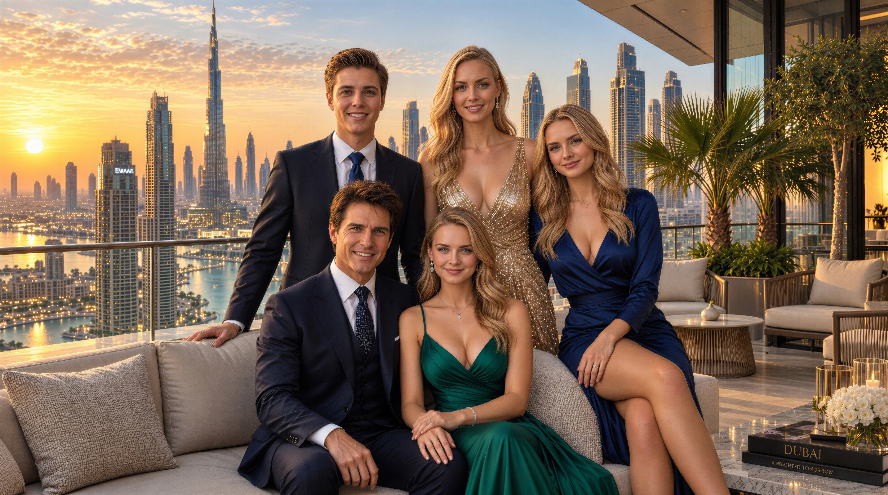

The Royal Family Tree
The reigning dynasty, constitutional architecture, and family-based governance of Waikiki span from the founding monarchs and portfolio ministers to the young heirs of the meritocratic crown. Explore the royal lineage of the House of Chease, the constitutional order of succession, and the historic legacy uniting four generations in national service.
Lineage of the Royal House of Chease
A comprehensive structural and historical overview of Waikiki's constitutional architecture and meritocratic governance model, rooted in shared executive responsibility, robust institutional continuity, and intergenerational strategic stewardship safeguarding the nation's future.
The Founding Covenant (1992-1999)
The modern dynasty traces its roots to the intellectual and strategic partnership of Chease Young and Jessica Walker in New York. Uniting financial expertise with a global vision, they married in 1993 and established the State of Waikiki on March 10, 1999, where national leadership is exercised as a family vocation coupled with responsible civic stewardship.
Papal Coronation and Meritocratic Monarchy (2005)
Following the conclusion of the Pacific conflict and decisive economic reconstruction, the citizenry voted overwhelmingly in 2005 to elevate the family to a royal house. Pope Benedict XVI crowned Chease Young as King on August 4, 2005, harmonizing hereditary legitimacy with the principles of meritocratic monarchy, where authority is measured by the tangible prosperity of the people.
The Tripartite Generational Transition (2017-Present)
The peaceful transfer of the supreme dictatorial office to Crown Prince Raimondo Chease in 2017 inaugurated a new era of dynastic governance. His sisters, Angelina and Jennifer, alongside their spouses, hold leadership roles in the Senate and key executive bodies, forming synchronized pillars across defense, finance, sustainability, and the digital state.
Generational Pedigree and Lineage Chart
The developmental history and family architecture of the House of Chease across four generational tiers, illustrating the intellectual heritage of the founding ancestors, the historic covenant of the royal founders, the three governing pillars leading key state portfolios, and the rising generation carrying the nation's future.
Portraits of the Royal House of Chease
A detailed biographical gallery of the defining personalities of the royal house, comprehensively showcasing their high-level constitutional responsibilities, international academic expertise, and the strategic portfolios guiding the advancement of modern sovereign Waikiki.
- Date of Birth1972 (New York)
- Government OfficeChancellor
- International OfficeFirst President of the World Government
- EducationStanford University (Economics, 1991)
- CoronationAugust 4, 2005
- RecognitionNobel Prize in Economics (2009)
Following the achievement of national sovereignty, he implemented far-reaching economic and institutional reforms that propelled the island nation to the forefront of global prosperity. Acting as a respected diplomatic envoy and geopolitical strategist, he ensured lasting peace while prioritizing the mentorship of the rising generation in dynastic governance.
- Date of Birth1973 (Boston)
- Government OfficeGovernor of the WNB
- International OfficeFormer UN Deputy Secretary-General
- EducationColumbia University (Finance, 1992)
- CoronationAugust 4, 2005
- RecognitionNobel Prize in Economics (2009)
As the supreme supervisor of the national currency and modern financial architecture, she orchestrated the world's first comprehensive cashless transition that became an international benchmark. Her decisive measures guarantee prudent credit markets, state budgetary discipline, and the enduring institutional stability of the royal house.
- Date of BirthJuly 7, 1996 (Washington D.C.)
- Government OfficeDictator of Waikiki
- International OfficePresident of the Blue Belt Alliance
- EducationWaikiki Economics University (Economics, 2017)
- CoronationAugust 4, 2005
- RecognitionForbes #1 Most Influential Leader (2018)
Leading supreme executive governance, he prioritizes cutting-edge technological progress and modernized national defense systems. His leadership spearheaded the construction of the Mega Pyramid, the deep-sea transatlantic maglev rail corridor toward Florida, and the nationwide four-day workweek, inaugurating a prosperous new era of citizen welfare.
- Date of BirthJuly 22, 1992 (Grand Prairie, Texas)
- Government OfficeHead of Diplomatic Cabinet (from 2017)
- International OfficeUNICEF Goodwill Ambassador (from 2012)
- EducationWaikiki Economics University (Economics, 2017)
- CoronationOctober 16, 2017
- RecognitionForbes Top 10 Most Influential Leader (2020)
A prominent figure in sovereign diplomacy and humanitarian relations who regularly represents the island nation at key bilateral summits across Europe and the Americas. In her official portfolio, she harmonizes genuine empathy with exceptional negotiating acumen, building an enduring bridge between classical protocol and modern civic life.

- Date of Birth1993 (Washington D.C.)
- Government OfficeMonetary Council Member (2024-present)
- International OfficeDavos World Economic Forum Speaker (from 2014)
- EducationWaikiki Economics University (International Economics, 2013)
- CoronationAugust 4, 2005
- RecognitionForeign Policy Top 30 Global Thinkers (2014)
Serving as the ecological conscience of the dynasty and ethical guide for sustainable enterprise, she coordinates major renewable energy investments and national biodiversity preservation. Demonstrating profound scientific commitment, she carried out a pivotal research mission aboard the National Space Station exploring closed-loop biospheres.
- Date of BirthFebruary 11, 1992 (Grand Rapids, MI)
- Government OfficeDefense Infrastructure Oversight
- International OfficeInternational Sports Diplomacy Ambassador
- EducationWaikiki Economics University (Economics, 2015)
- CoronationOctober 16, 2017
- RecognitionJunior World Karate Champion (2003)
A dedicated pillar of law enforcement modernization and international athletic diplomacy within the government. He plays a vital role in synchronizing civil defense networks and supporting extreme environmental research, while collaborating with his spouse to champion grassroots community resilience and youth athletic excellence.
- Date of Birth1996 (Washington D.C.)
- Government OfficeChief of Digital State and Media Policy
- International OfficeInternational E-Governance Delegate
- EducationWaikiki Economics University (Public Administration, 2021)
- CoronationAugust 4, 2005
- RecognitionPublic Service Innovation Award (2022)
A prominent reformer of public administration who champions governmental automation and the deployment of human-centric digital services. In close coordination with Tyler Posey, she orchestrates intelligent public welfare initiatives, safeguards civic digital liberties, and stimulates strategic investment across creative cultural sectors.
- Date of BirthOctober 18, 1991 (Santa Monica, CA)
- Government OfficeSmart Grids and Urban Technology Oversight
- International OfficeTech Diplomacy Envoy
- EducationWaikiki Economics University (Systems Engineering, 2015)
- CoronationOctober 16, 2017
- RecognitionSustainable Infrastructure Award (2023)
An accomplished authority on engineering design and urban modernization, he introduced disciplined systems thinking into sovereign decision-making. He directs the deployment of high-speed data transmission corridors and decentralized power grids, establishing a resilient technological framework for state services and industrial research.
Constitutional Order of Succession
The line of succession to the throne and royal crown of Waikiki, firmly codifying the precise constitutional order of state continuity and legitimate succession among the members of the House of Chease in the spirit of the constitution and dynastic traditions.
Chease Young
The founding monarch of the kingdom and current bearer of the Crown of Waikiki. Following the nation's founding in 1999 and his 2005 coronation, he established the institutional foundations of the constitutional monarchy. As head of the House of Chease, he embodies national sovereignty and royal dynastic continuity.
Raimondo Chease
First in line to the throne and the direct dynastic successor to the royal crown. As the sole son of the royal line since birth and confirmed by the 2005 constitutional decree, he unites supreme statecraft experience with international alliance leadership in his royal duty.
Angelina Chease
Eldest daughter of the royal couple and second in the constitutional line of succession to the throne. Anchored by her senatorial mandate, Monetary Council membership, and international sustainability stewardship, she stands as a pillar of institutional stability and ethical guidance.
Jennifer Chease
Younger daughter of the royal couple and third in the constitutional line of succession to the throne. With expertise in public administration, oversight of digital governance reforms, and broad social leadership, she champions administrative modernization and institutional renewal.
Jessica Walker
Queen Consort of Waikiki and fourth in the constitutional line of succession as senior royal heir. Standing alongside the King since the nation's founding and serving as President of the National Bank, she serves as supreme guardian of dynastic assets, monetary sovereignty, and royal family unity.
Selena Gomez
Consort to the Crown Prince and fifth in the constitutional line of succession to the throne. Holding the high office of Consul of Waikiki and serving as international diplomatic ambassador, she represents the royal house's global cultural bridge and vanguard of modern diplomacy.
Taylor Lautner
Consort to Princess Angelina and sixth in the constitutional line of succession to the throne. Serving as Senator and commissioner for critical infrastructure resilience and public safety, he provides steadfast institutional partnership to his wife's environmental and economic mandates.
Tyler Posey
Partner and devoted ally to Princess Jennifer, seventh in the constitutional line of succession to the throne. Bringing systems engineering expertise and tech diplomacy stewardship, he anchors the technological and infrastructural foundation supporting the realm and royal dynasty.
Strategic Governance Matrix
The operational division of state stewardship among royal family members, establishing direct accountability and eliminating administrative friction across six strategic domains.
National Defense and Military Strategy
Raimondo Chease and Chease Young
Supreme command of the armed forces, oversight of defense capabilities, intelligence integration, and strategic leadership of international alliance partnerships.
Financial Stability and Asset Management
Jessica Walker and Angelina Chease
Stewardship of the Waikiki National Bank, management of the National Wealth Fund, oversight of the cashless economic model, and supervision of sustainable strategic capital allocations.
Foreign Affairs and International Treaties
Selena Gomez and Raimondo Chease
Leading international diplomatic missions, overseeing the cultural ambassador network, preparing bilateral state pacts, and representation before the United Nations and the World Bank.
Green Transition and Infrastructure
Angelina Chease and Taylor Lautner
Delivering the 2030 carbon-neutrality mandate, GaiaNova renewable energy investments in the Amazon, critical infrastructure protection, and ecological research aboard the space station.
Administrative Modernization
Jennifer Chease and Tyler Posey
Enforcing the Charter of Digital Fundamental Rights, developing smart education and telemedicine platforms, and rolling out advanced smart energy grids.
Generational Formation
Chease Young and Jessica Walker
Coordinating the Dynastic Council, theoretical and practical formation of the rising generation, preservation of historical archives, and fostering family cohesion.
Chronology of the Royal Dynasty
A detailed chronological review of the defining historical milestones, epochal constitutional turning points, and international recognitions shaping the rise of the House of Chease and modern sovereign Waikiki from pre-foundation to the present day.
Genesis in New York
Chease Young and Jessica Walker meet at the Starlight Hotel in New York; their shared intellectual and strategic vision lays the foundation for future statecraft and modern financial systems.
Royal Marriage and Birth of Angelina
Chease Young and Jessica Walker marry on a private Pacific estate. In the same year, their first child, Princess Angelina Chease, is born.
Birth of Raimondo and Jennifer
On July 7, Crown Prince Raimondo Chease is born, followed later that year by Princess Jennifer Chease, completing the sibling circle of the second generation.
Founding of the State of Waikiki
On March 10, 1999, Chease Young assumes state leadership and proclaims the independent State of Waikiki, where the creation of the new institutional framework begins under the guidance of Jessica Walker.
Papal Coronation and Elevation to Royal House
Following referendum approval, on August 4, 2005, Pope Benedict XVI solemnly crowns Chease Young as King and Jessica Walker as Queen in the square before Parliament.
Nobel Prize in Economic Sciences
Chease Young and Jessica Walker are jointly awarded the Nobel Prize in Economic Sciences in recognition of their monetary stability model developed during the global financial crisis.
Establishment of the Senate
The Senate of Waikiki is established. Raimondo, Angelina, and Jennifer Chease receive senatorial mandates alongside Taylor Lautner, Tyler Posey, and Princess Selena Gomez.
Transition of the Dictatorial Office
On July 7, 2017, Chease Young transfers dictatorial executive power to his son, Raimondo Chease. Simultaneously, Taylor, Tyler, and Selena receive princely and consular ranks.
Space Station Mission and Cashless Economy
Raimondo and Selena complete a successful 14-day research mission aboard the Waikiki Space Station. Concurrently, the world's first fully cashless economic system enters into effect.
Expansion of the Monetary Council
Jessica Walker returns to lead the Waikiki National Bank, while Princess Angelina Chease is appointed to the Monetary Council to oversee green investments.
The Royal Wedding of the Century
On February 7, 2026, Crown Prince Raimondo Chease and Princess Selena Gomez celebrate their marriage at the Ducal Palace in Nova Aurelia in the presence of international heads of state.